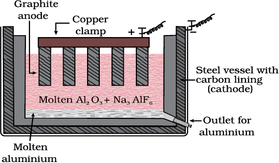

6.5 Electrochemical Principles of Metallurgy
We have seen how principles of thermodyamics are applied to pyrometallurgy. Similar principles are effective in the reductions of metal ions in solution or molten state. Here they are reduced by electrolysis or by adding some reducing element.
In the reduction of a molten metal salt, electrolysis is done. Such methods are based on electrochemical principles which could be understood through the equation,
ΔG = – nEF (6.42)
here n is the number of electrons and E is the electrode potential of the redox couple formed in the system. More reactive metals have large negative values of the electrode potential. So their reduction is difficult. If the difference of two E values corresponds to a positive E0 and consequently negative ΔG in equation 6.42, then the less reactive metal will come out of the solution and the more reactive metal will go to the solution, e.g.,
Cu2+ (aq) + Fe(s) → Cu(s) + Fe2+ (aq) (6.43)
In simple electrolysis, the Mn+ ions are discharged at negative electrodes (cathodes) and deposited there. Precautions are taken considering the reactivity of the metal produced and suitable materials are used as electrodes. Sometimes a flux is added for making the molten mass more conducting.
Aluminium
In the metallurgy of aluminium, purified Al2O3 is mixed with Na3AlF6 or CaF2 which lowers the melting point of the mix and brings conductivity. The fused matrix is electrolysed. Steel vessel with lining of carbon acts as cathode and graphite anode is used. The overall reaction may be written as:
2Al2O3 + 3C → 4Al + 3CO2 (6.44)

Fig. 6.6: Electrolytic cell for the extraction of aluminium
This process of electrolysis is widely known as Hall-Heroult process.
Thus electrolysis of the molten mass is carried out in an electrolytic cell using carbon electrodes. The oxygen liberated at anode reacts with the carbon of anode producing CO and CO2. This way for each kg of aluminium produced, about 0.5 kg of carbon anode is burnt away. The electrolytic reactions are:
Cathode: Al3+ (melt) + 3e– → Al(l) (6.45)
Anode: C(s) + O2– (melt) → CO(g) + 2e– (6.46)
C(s) + 2O2– (melt) → CO2 (g) + 4e– (6.47)
Copper from Low Grade Ores and Scraps
Copper is extracted by hydrometallurgy from low grade ores. It is leached out using acid or bacteria. The solution containing Cu2+ is treated with scrap iron or H2 (equations 6.42; 6.48).
Cu2+(aq) + H2(g) → Cu(s) + 2H+ (aq) (6.48)
Example 6.4
At a site, low grade copper ores are available and zinc and iron scraps are also available. Which of the two scraps would be more suitable for reducing the leached copper ore and why?
Solution
Zinc being above iron in the electrochemical series (more reactive metal is zinc), the reduction will be faster in case zinc scraps are used. But zinc is costlier metal than iron so using iron scraps will be advisable and advantageous.